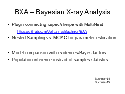
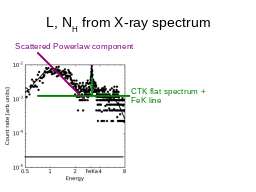
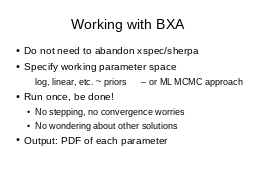
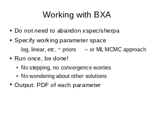

(back to all presentations)Table of contents |
Author: Johannes Buchner Homepage: http://astrost.at/istics/ Further information: BXA robust parameter estimation & practical model comparisonAbstract: Choosing between several models is an everyday problem in the analysis of X-ray spectra. Is it justified to add a spectral line? Is physical effect A present? Do I need to replace this component with a more detailed physical model? Until now, the methods commonly applied in practice have been limited. BXA allows practical Bayesian model comparison for spectral models, by connecting the Multinest algorithm to xspec/sherpa. I will demonstrate how to use BXA for model selection between different obscurer geometries of AGN, show that this approach is more sensitive than likelihood ratio thresholds and present how to calibrate false selection rates. BXA also allows robust parameter estimation, because contrary to MCMC approaches, BXA easily deals with multiple solutions and automatically converges to a well-defined end point. Finally, I will briefly discuss how to infer about the populations behind limited samples with Hierarchical Bayesian inferenc! e.  


 



|